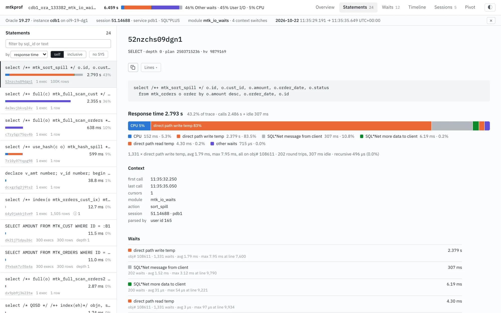
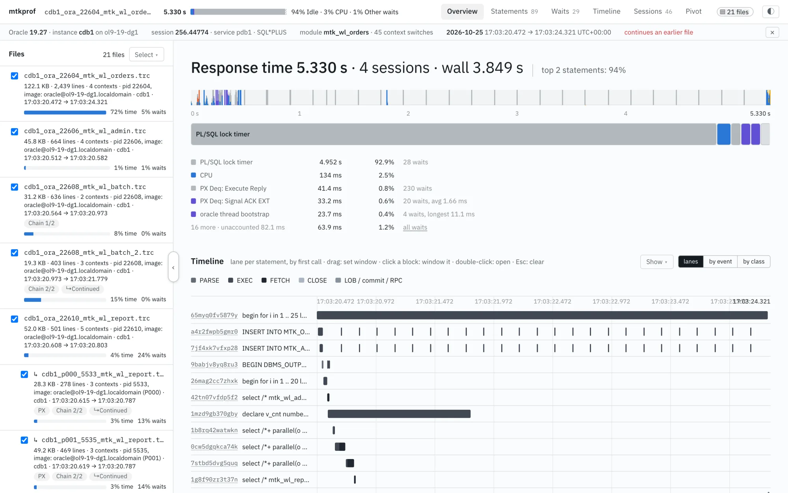
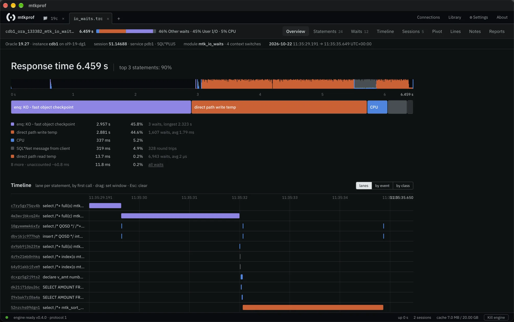

Documentation
mtkprof analyzes Oracle 10046 SQL trace files (from sql_trace events or DBMS_MONITOR). This page covers the command line, the interactive report and the desktop app.
Overview#
A SQL trace records every database call of a session (parse, execute, fetch, close) with its CPU and elapsed time, and every wait event in between. tkprof sums those per statement. mtkprof does that too, with the same numbers, and then keeps the rest: the trace becomes a model of statements, cursors, calls, waits, bind values, plans, sessions and time, which every report and view reads.
The central question it answers is where did the response time go. The answer is a resource profile (after Cary Millsap): response time = CPU + each wait event + whatever the trace does not account for. You get it for the whole trace, for one statement, for a session or for any time window.
There are three ways to use it, all built on the same engine:
- The command line (
mtkprof): one static binary, no installation. It writes a text report and a self-contained HTML report next to the trace, and has commands for pivots, comparisons, plans, CSV export and fetching traces. - The interactive report: the HTML file from
mtkprof html, or the same UI served bymtkprof serve. Nothing leaves the machine. - The desktop app: traces in tabs, a persistent index cache, the raw trace lines, notes, saved pivots, and connections that fetch traces over ssh or from the database.
Quick start#
mtkprof comes in two versions. They are separate downloads, installed differently, so start by picking one.
| Command line (CLI) | Desktop app | |
|---|---|---|
| What it is | One binary, mtkprof. It writes a text report and a self-contained HTML report you open in a browser. | A windowed app with everything the HTML report has, plus tabs, the raw trace lines, notes, an index cache and connections that fetch traces over ssh or from the database. |
| Runs on | Linux, macOS, Windows, AIX, Solaris | Windows, macOS, Linux (x64 only) |
| Install | The curl … | sh one-liner on Unix, or the bare binary from the download panel | An installer (.exe, .dmg, .AppImage, .deb) from the download panel |
| Use it for | The database host, scripts, a report to attach to a ticket | Working through traces on your own machine |
Both read the same traces and show the same numbers. You can install both: the CLI's mtkprof open trace.trc hands a trace to the desktop app. The desktop installer doesn't add the mtkprof command to your PATH, so install the CLI too if you want it.
Command line (CLI)
Download a single binary; no installer and no dependencies. On a database host this is usually all you need.
-
Install. On Linux, macOS, AIX or Solaris:
curl -fsSL https://raw.githubusercontent.com/davidbudac/modern-tkprof/main/install.sh | sh mtkprof version
On Windows, download
mtkprof-windows-amd64.exefrom the download panel. Other ways to install are under Install. -
Trace a session. In SQL*Plus or SQLcl, run the workload between these lines, then ask for the file name:
alter session set tracefile_identifier = 'mytest'; alter session set events 'sql_trace wait=true, bind=true, plan_stat=all_executions'; -- ... run the workload ... alter session set events 'sql_trace off'; select value from v$diag_info where name = 'Default Trace File';To trace another session, see Tracing a session. If the trace is on a server you can't log in to interactively,
mtkprof fetchcopies it over ssh or out of the database (Remote traces). -
Run mtkprof on it.
mtkprof cdb1_ora_4711_mytest.trc
This writes
cdb1_ora_4711_mytest.trc.txt(the text report) andcdb1_ora_4711_mytest.trc.html(the interactive report) next to the trace. -
Read it. Open the
.htmlfile in a browser. It holds all the data and works offline. Overview shows the response time and the resource profile: CPU and each wait event, with their share of the time. Statements ranks the SQL by elapsed time; click one to see its waits, plan, binds and executions. Where there is no browser, the text report has the same numbers. Reading the report explains its sections. -
Go further.
mtkprof report trace.trc -sort cpu -top 20 # text report only, 20 statements ranked by CPU mtkprof serve trace.trc # the UI at http://127.0.0.1:8046/ mtkprof report trace_dir/ # every *.trc in a directory as one trace set mtkprof compare before.trc after.trc # what changed between two runs mtkprof open trace.trc # open it in the desktop app
All commands are listed under Commands.
Desktop app
Install it like any other application. It has its own engine built in and doesn't need the CLI.
-
Install. Don't use the
curlscript for this; it installs only the CLI. Download the installer for your system from the download panel on the home page, which picks your operating system:_x64-setup.exefor Windows,_aarch64.dmg(Apple Silicon) or_x64.dmg(Intel) for macOS,.AppImageor.debfor Linux. The full list is under Install and first start. -
Start it once. The builds aren't signed, so the first start needs one extra step. On Windows, click More info, then Run anyway. On macOS, use System Settings → Privacy & Security → Open Anyway, or run:
xattr -dr com.apple.quarantine /Applications/mtkprof.app
The app starts its engine in the background, and the status bar shows when it is ready.
-
Open a trace. On the + tab, choose Open files… or Open folder…, drop files on the window, or paste a path. Double-clicking a
.trcfile works too, and so doesmtkprof open trace.trcif you have the CLI installed. Files you pick together open as one trace set in one tab. -
Read it. The tab has the same views as the interactive report (Overview, Statements, Waits, Timeline, Pivot and more), plus Lines, the raw trace file. Every “line N” link opens Lines at that line, and b bookmarks a line. Notes you write stay with the trace's content, not its file name.
-
Fetch traces from a server. Connections (top right) keeps ssh hosts and Oracle logins. Over ssh, browse the trace directories and Fetch files or Follow a growing one as a live tab. With an Oracle login, switch tracing on for a session and list the trace files. Passwords are asked for when a connection is used and are never stored on disk. See Connections.
A trace you have opened before opens again in about a second from the index cache, and the app reopens the last run's tabs when it starts.
Install#
The command-line binary
One command for every Unix (Linux, macOS, AIX, Solaris): it picks the binary for your OS and CPU, checks it against SHA256SUMS and installs it as mtkprof in /usr/local/bin (or ~/.local/bin without write access). It has no dependencies (pure Go, no cgo).
# curl | sh, all Unix systems; set MTKPROF_VERSION=v0.5.0 or MTKPROF_LITE=1 to choose the release
curl -fsSL https://raw.githubusercontent.com/davidbudac/modern-tkprof/main/install.sh | sh
mtkprof version
Or download the binary for your platform from the releases page, check it against SHA256SUMS, make it executable and put it on your PATH or next to the trace:
| Platform | File |
|---|---|
| Linux x86-64 / ARM64 | mtkprof-linux-amd64, mtkprof-linux-arm64 |
| Windows x64 | mtkprof-windows-amd64.exe |
| macOS Apple Silicon / Intel | mtkprof-darwin-arm64, mtkprof-darwin-amd64 |
| AIX (POWER) | mtkprof-aix-ppc64 |
| Solaris x86-64 | mtkprof-solaris-amd64 |
The mtkprof-lite-* builds (Linux, AIX, Solaris) leave out the Oracle client code: about 12 MB instead of 27 MB, for database hosts where the trace files are local and no database connection is needed.
# Linux example
gh release download -R davidbudac/modern-tkprof -p 'mtkprof-linux-amd64' -p SHA256SUMS
sha256sum --ignore-missing -c SHA256SUMS
chmod +x mtkprof-linux-amd64 && mv mtkprof-linux-amd64 ~/bin/mtkprof
mtkprof version
The desktop app
Installers are in the download panel on the home page and on the releases page, under the same tag as the binaries, from v0.5.0; v0.3.1 and earlier are on the archived mtkprof-desktop releases page. See Install and first start below; the builds are not signed, so the first start needs one extra click.
Tracing a session#
For a useful trace, switch on waits, binds and row-source statistics for every execution. In your own session:
alter session set tracefile_identifier = 'mytest';
alter session set events 'sql_trace wait=true, bind=true, plan_stat=all_executions';
-- ... run the workload ...
alter session set events 'sql_trace off';
select value from v$diag_info where name = 'Default Trace File';
For another session, as a user with EXECUTE on DBMS_MONITOR:
exec dbms_monitor.session_trace_enable(session_id => 123, serial_num => 4567, waits => true, binds => true, plan_stat => 'ALL_EXECUTIONS')
-- ... later ...
exec dbms_monitor.session_trace_disable(session_id => 123, serial_num => 4567)
mtkprof can do the same from the command line, and list the trace files the database has written:
mtkprof trace scott@dbhost/pdb1 -sessions # V$SESSION mtkprof trace scott@dbhost/pdb1 -sid 123 -serial 4567 -on # waits, binds, plan_stat=all_executions mtkprof trace scott@dbhost/pdb1 -sid 123 -serial 4567 -off mtkprof trace scott@dbhost/pdb1 -files -since 2h # trace files in the ADR
Lower levels work too (level 1 has no waits, level 4 binds only, level 8 waits only); mtkprof reports what the trace contains. A trace started in the middle of a session is fine as well: cursors used before their PARSE line are reported as such.
Commands#
Every command that takes a trace takes any number of files and directories (a trace set). mtkprof help prints the full usage; mtkprof <command> -h the flags of one command.
| Command | What it does |
|---|---|
mtkprof <trace…> | text report and HTML report next to the trace |
report | text report: profile, statements, executions, binds, plans, sessions, time buckets, findings. -sort elapsed|cpu|execs|disk, -top N, -execs N (executions listed per statement, 0 none, -1 all), -binds N, -sys, -o file |
html | self-contained interactive report (-o out.html) |
serve | the same UI served at http://127.0.0.1:8046/ (-addr); -spill and -facts=false for big traces |
pivot | group-by on the command line: -fact calls|waits, -by dim[,dim…] (up to 4), -measure, -window, -context, -csv. -by '?' lists dimensions and measures |
compare | text report of trace B against trace A; html|serve|json a b -compare adds a Compare tab to the UI |
plan | row-source plans from STAT lines: -list, -sql_id X as JSON, -viz for an "Open in plan viz" link |
json | the full document the UI reads (dimension tables and fact columns) |
export | CSV tables for DuckDB, Excel or Python (-o dir) |
refscript, ref -db | collect object names, datafiles, users and DBMS_XPLAN plans; see Object names and plans |
fetch, follow | copy a trace over ssh or out of the database; mirror a growing trace, optionally with a live report; see Remote traces |
trace | switch SQL trace on or off for a session, list sessions and trace files |
open | open traces in the desktop app (starts it if needed) |
mcp | the analysis tools as an MCP server for Claude Code or another agent; see AI clients (MCP) |
brief | a Markdown brief of the trace's numbers and your notes, for handing to an LLM agent; bind values masked by default |
findings-config | the default finding thresholds as JSON; edit and pass with -findings-config f.json |
lint | what the parser saw: line kinds, events, unknown lines |
engine | the local backend of the desktop app; see The engine |
Reading the report#
The text report and the interactive report share one model and show the same numbers.
Response time and the resource profile
The response time of a trace is its span: from the first to the last timestamp. The resource profile splits it into the CPU of the top-level calls, every wait event (inside calls and between them) and unaccounted-for, the difference. A large unaccounted-for share usually means CPU queueing or time the instrumentation does not see.
Waits between calls, such as SQL*Net message from client, are idle from the database's point of view but are part of the user's response time: the client was thinking or the network was slow. They are shown in grey and can be hidden.
For a trace set with several sessions, response time is the sum of each session's span, not the wall clock; the heading shows both ("Response time 5.330 s · 4 sessions · wall 3.849 s").
Statements
Statements are ranked by response time including their recursive children and the idle time between their calls, so the statement the user waited for comes first even when the work was done in recursive SQL. The call table under each statement shows tkprof's exclusive numbers (count, cpu, elapsed, disk, query, current, rows, library cache misses), with an inclusive toggle in the UI.
Executions, binds and plans
The buttons under a statement's title open its other views: Row flow (its plan as rows moving from the leaves to the client), Dialogue (its slowest execution as a sequence diagram) and I/O map (the file blocks it read and wrote). A block-I/O wait in the statement's Waits list, or in the Waits view, links to the I/O map too.
- Executions: every EXEC with its fetches, elapsed, CPU, waits, rows and bind values, so the slow execution with the odd bind is one click away. Tick two executions to compare call statistics, waits, binds and plan hash side by side. One picked execution can also be drawn as a Dialogue: a sequence diagram of its calls, the waits on disk, TEMP and elsewhere, the rows going back and the client's gaps, with alike round trips folded into loops.
- Plans: row-source statistics from the STAT lines, one per plan hash, with the hot steps highlighted. With a reference bundle the DBMS_XPLAN text, predicates and estimates are added. The plan advisor lists what looks wrong in each plan, such as misestimated cardinalities, spills, nested-loop volume and partition pruning. It compares A-Rows with the same estimate Row flow draws (E-Rows times starts, except below an iterator such as INLIST ITERATOR or PARTITION).
- Recursive statements: the children a statement caused, with their share.
Findings
Rules that flag common problems with their evidence: outlier executions, hard parsing, a parse per execution, cursors closed hard, small fetch sizes, round trips per row, a commit per row, client think time and idle time inside calls. Each finding is rated serious, notable or info by its share of the response time. Thresholds come from mtkprof findings-config.
The interactive report#

| View | What it shows |
|---|---|
| Overview | response time, the activity minimap, the resource profile, findings and a timeline lane per statement (colored by call phase, or by resource) |
| Statements | the ranked list and the statement workbench: SQL, profile, context, waits, recursive statements, plan (a table, or the row flow: rows from the leaves to the client, the estimate beside them, each step's own time), call table, executions |
| Waits | wait events with class, time, count and min/avg/max; per event a log-scale duration histogram and the split by statement, object and p1 |
| I/O map | every physical I/O wait with a block address, one panel per file or per object: x = the n-th such wait (or time), y = the block number (linear, or packed with the empty ranges collapsed), marks as tall as the blocks they moved, coloured by event, object, object type, schema, tablespace, file, statement, session, latency, read size or re-reads, with the objects' block ranges as faint bands. A density layer under the marks counts every wait, not the sample, into small cells (on by itself while the marks are a sample). Objects are named from a reference bundle or the trace's own plans (schema, PDB and partition on request). Drag to zoom (sideways: time, up or down: blocks), ⌘/Ctrl + wheel, + − 0; a side panel counts per object and per statement over every wait, lists the hot blocks (ranges of blocks read over and over; a click zooms to one), and shows latency histograms. Full scans are diagonals, a sort spill a write stripe then a read stripe, a multipass hash join a sawtooth |
| Timeline | every call of every statement over time |
| Sessions | session contexts (module, action, client id, service, session), roll-ups and a context filter |
| Pivot | calls or waits by one or two dimensions with the measures you pick; Download CSV |
| Compare | with two traces and -compare: totals, both profiles, statements ranked by change, wait-event deltas |
Filters follow you
The time window, the session filter, the file selection and the idle toggle apply to every view. Drag in the minimap or the timeline to set a window; click a block on an Overview lane to window that block and select its statement; double-click opens the statement. The active filters are chips under the top bar, each with ×, and Clear all. The state is kept in the URL, so a link reopens the same view.
Keyboard: ⌘/Ctrl + a digit switches views, ⌘I / Ctrl+I opens the I/O map (⌥⌘← / ⌥⌘→, Ctrl+PageUp / PageDown elsewhere, step through all of them), arrow keys move through tables, Esc closes the innermost panel or clears the window.
Trace sets#
A trace can be several files. A directory contributes its *.trc files (not recursive, sorted).
mtkprof report trace_part1.trc trace_part2.trc # one logical trace mtkprof html /u01/.../trace/ -o all.html # all *.trc in a directory mtkprof report qc.trc cdb1_p000_8505.trc # query coordinator + PX slave mtkprof report start.trc -no-follow # do not follow split-file chains
- Split traces (
*** TRACE CONTINUES IN FILE x ***) are followed automatically, even from one end only, and parsed as one stream, so calls after the split still belong to cursors opened before it.-no-followturns this off. - Independent files are separate sessions, as in
trcsessoutput. - PX slave traces (
…p000…) are attached to their query coordinator by time window, client id, module and action, shown nested under it, and reported as "PX slaves: N sessions, X s" on the statement instead of being added to the coordinator's response time.
In the UI a Files panel lists the files with their share of time and waits; unticking a file scopes every view, the findings and the statement statistics to the rest.

Comparing traces#
For a before/after comparison, such as a new index, a parameter change or a new release:
mtkprof compare before.trc after.trc -n 30 # text report of B against A mtkprof serve before.trc after.trc -compare # UI with a Compare tab and an A/B toggle
Statements are matched by sql_id (statements without one by kind and normalized text), wait events by name. The Compare tab shows totals (A, B and the difference), both profiles on one time scale, the statements ranked by the change in elapsed time (new, missing, slower, faster, plan changed) and the wait-event deltas. Click a statement to open it in trace A or B.
Bind values#
Bind values are kept by default. On report, html, serve, json and export:
-bind-values redact(or-redact-binds) replaces each value with its type, length and a stable hash, e.g.<VARCHAR2 len=11 h=a2334142>, so equal values stay recognizable across executions.-redact-salt <string>mixes a salt into the hash: equal values still match across traces redacted with the same salt, but the hashes cannot be looked up in a table of known values without it.-bind-values nonedrops bind values entirely.
The hash is for correlation, not secrecy: short values (numbers, codes) can be recovered by brute force. SQL text, including its literals, is never redacted.
Big traces#
By default the whole model stays in memory: a 1 GB trace takes about 7 s and 2 GB of memory for the HTML report. For bigger traces, pick a mode. The numbers do not change; what is kept does.
| Flag | Commands | Effect |
|---|---|---|
-lowmem | report, pivot, html, json, serve, export | bind values are not retained (no BINDS sections or bind views); every other number is identical |
-facts=false | html, json, serve | leaves the raw fact tables out of the document. For serve the server keeps the model and answers the UI's group-by and detail queries, so the browser stays light and fully interactive |
-spill[=DIR] | serve | calls, waits and binds are written to temporary files about the size of the trace and scanned on demand: full drill-down in constant memory (1 GB trace: 66 MB RSS, Pivot in about 0.3 s). Files are removed on exit |
-aggregate | report, html, json, serve | calls and waits are folded into aggregates while reading and never stored: memory independent of trace size (10 GB: about 0.5 GB, 32 s). No executions tables, bind sections or Pivot |
Object names and plans#
A trace holds numbers, not names: obj#, file#, user ids, and no plan text. The reference bundle adds names and DBMS_XPLAN output, and only adds; no number changes.
- Make a read-only SQL*Plus script tailored to the trace:
mtkprof refscript trace.trc -o ref.sql # DBA views + V$ (SELECT_CATALOG_ROLE) mtkprof refscript trace.trc -lite -o ref.sql # ALL_ views only, any schema can run it
- The DBA runs it where the database is (SPOOL does not create directories):
mkdir -p ref/plans sqlplus user/password@service @ref.sql
- Apply it to any output with
-ref:mtkprof report trace.trc -ref ref mtkprof html trace.trc -ref ref
Without directories or a connection: mtkprof refscript trace.trc -paste -o names.sql writes a script that prints the names (add -plans for DBMS_XPLAN). Run it in SQL*Plus, SQLcl or SQL Developer as any user (without SELECT_CATALOG_ROLE it reads the ALL_ views and says so), then paste its output into the desktop app's Import names (the I/O map, the statement inspector, or Connections › Reference data), or save it and pass -ref names.txt. The app also hands out the script itself.
With a database login, mtkprof ref -db user@host:1521/service trace.trc -o ref runs the same queries itself. When the plan hash in DBMS_XPLAN matches a STAT plan, access and filter predicates and optimizer estimates are overlaid on the trace's plan.
The bundle holds object, owner, user and datafile names and execution plans (predicates can contain literals). It holds no table data and no bind values. Review it before sharing, like the trace itself.
Remote traces#
The analysis commands never connect anywhere. These do, and only when you run them. Passwords, passphrases and host-key questions are asked on the terminal, never taken from a flag, and nothing is stored.
Over ssh
mtkprof fetch oracle@dbhost /u01/.../cdb1_ora_4711.trc -o traces/ # gzip in transit, resumes mtkprof follow oracle@dbhost /u01/.../cdb1_ora_4711.trc -o live.trc # tail -f; Ctrl-C stops, rerun resumes mtkprof follow oracle@dbhost /u01/.../cdb1_ora_4711.trc -serve # live report while it grows
-transport auto (default) uses the system ssh with your ~/.ssh/config, agent and bastions, and falls back to a built-in SSH client; cli and lib force one. follow -serve parses the stream as it arrives and serves a new snapshot at most every -batch-ms (default 1000); when the trace continues in another file, that file is followed too.
From the database
mtkprof fetch -db scott@dbhost/pdb1 -name cdb1_ora_4711.trc -o t.trc # via V$DIAG_TRACE_FILE_CONTENTS
Connection strings are Easy Connect: user@host[:port]/service, port 1521 by default, -tcps for TLS. Fetching through the ADR views is slow (about 0.4–1 MB/s); use ssh for files over about 200 MB.
Privileges
| For | Needs |
|---|---|
| connecting | CREATE SESSION |
trace -sessions | SELECT on V$SESSION, V$PROCESS |
trace -files, fetch -db | SELECT on V$DIAG_TRACE_FILE, V$DIAG_TRACE_FILE_CONTENTS (12.2+), V$PROCESS, V$SESSION |
trace -on/-off | EXECUTE on DBMS_MONITOR |
ref -db | SELECT_CATALOG_ROLE (or the DBA_ and V$ views it reads); -lite needs nothing beyond CREATE SESSION |
SELECT_CATALOG_ROLE covers all of them. For a PDB, connect to the PDB.
Plans, JSON, CSV#
mtkprof plan trace.trc -list # statements with STAT plans mtkprof plan trace.trc -sql_id 70qh8zxg4kk69 -o plan.json # plan rows as JSON; -plan-hash, -exec N mtkprof plan trace.trc -sql_id 70qh8zxg4kk69 -viz # "Open in plan viz" link (plan in the URL fragment) mtkprof json trace.trc -o trace.json # the full document mtkprof export trace.trc -o csv/ # statements, cursors, contexts, events, calls, waits, binds, plan lines, transactions, errors mtkprof pivot trace.trc -by module,stmt -measure e,c,count -window 10:15:00,10:20:00 -csv
AI clients (MCP)#
mtkprof mcp exposes trace analysis through the Model Context Protocol (MCP), so an agent such as Claude Code can investigate a description of the problem. Standalone use needs the mtkprof CLI and a client that launches stdio MCP servers; no desktop app, running engine or database connection is required. The client supplies the AI model and its authentication.
Check that mtkprof version and mtkprof mcp -h work, then register it once in Claude Code (-s project instead writes it to the repository's .mcp.json). Choose the default masking command or the command that exposes bind values:
claude mcp add -s user mtkprof -- mtkprof mcp # once, for all your projects claude mcp add -s user mtkprof -- mtkprof mcp -binds keep # show bind values as traced
Then ask in Claude Code in your own words, with the path of the trace, for example: the nightly load traced in /u01/diag/rdbms/orcl/orcl/trace/orcl_ora_4711.trc got slow after 14:05. What is it waiting on, and which statement is to blame?
The agent opens the trace, maps the description onto it (a time becomes a window, a user or module a session, a query a statement) and answers with evidence: sql_ids, executions, wait events and trace lines as file.trc:line.
How the client and server work together
- The client starts
mtkprof mcpas a subprocess and connects to stdin/stdout. - It sends
initialize, follows withnotifications/initialized, then usestools/listto discover tool descriptions and argument schemas. - The assistant chooses a tool; the client sends a
tools/callrequest. mtkprof parses the trace and calculates the result. - The client gives that result to the model, which can request more tools before explaining the evidence.
The messages are line-delimited JSON-RPC. Stdout is reserved for the protocol; diagnostic logs go to stderr. The MCP server itself calls no AI model.
Other MCP clients
Set the transport to stdio, the executable to your mtkprof installation and the arguments to ["mcp"]. Clients using the mcpServers JSON format can use this example; replace the executable path:
{
"mcpServers": {
"mtkprof": {
"command": "/absolute/path/to/mtkprof",
"args": ["mcp"]
}
}
}
Configuration keys vary by client. On Windows, use the path to mtkprof.exe and escape backslashes in JSON (or use forward slashes). No server URL or mtkprof API key is needed in standalone mode.
Analysis tools
| Tool | What it answers |
|---|---|
open_trace | opens files or a directory (absolute paths) as one trace set and answers with its overview; opening another trace replaces it |
overview | database, files, sessions, response time and its split into CPU and waits, top statements, findings |
statements, statement | the ranked statements; one statement in full: SQL text, call table, waits, plans |
executions | the executions of a statement with their times and bind values |
pivot, timeline | group-by over calls and waits; time in buckets over the trace |
lines, search_lines | the raw trace lines around a call, a wait or a plan; text or regex search |
The tools return the same numbers as the report and the UI, as compact JSON of at most about 8,000 tokens each. Scoped analysis tools take a time window (from, to, trace time in µs) and session contexts to narrow the scope; the discovery schemas describe each tool's arguments. For truncated results, narrow the scope or request another page. lines and search_lines work by file and line number. mtkprof mcp <trace…> defers parsing until the first tool call that needs a trace. The standalone server keeps one trace set open at a time and builds its model in memory; it does not use the desktop index cache or spill mode.
Standalone versus desktop
With MTKPROF_ENGINE unset, tools run inside the MCP process on local trace files. When the desktop app launches a CLI assistant, it sets MTKPROF_ENGINE, MTKPROF_TOKEN, MTKPROF_SESSION and MTKPROF_CONVERSATION: MCP then forwards calls over authenticated HTTP to the existing engine session. No separate MCP registration is needed for the desktop assistant.
Standalone mode has open_trace. Desktop bridge mode instead adds notes, current_view and show for desktop context and navigation. In the bridge, bind masking follows the engine and conversation settings; -binds keep does not override them.
Data sent to the model
Standalone analysis runs locally; your client decides what it sends to its model. Tool results can include SQL text, file names, session metadata and trace lines. The standalone server does not show the desktop's per-trace/provider consent dialog.
Bind values are masked by default: type, length and a hash with a salt random per MCP server process, e.g. <NUMBER len=2 h=…>. Equal values match across traces opened by that process; restarting it creates a new salt. -binds keep exposes captured bind values. SQL text, including literals, is never masked. Desktop conversations use engine-managed masking instead.
MCP troubleshooting
- Server cannot start: use an absolute executable path if the client's PATH differs from your terminal's. Check its MCP logs (stderr).
- Command waits in a terminal: it is waiting for JSON-RPC requests on stdin; the MCP client normally starts and drives it.
- No trace or unreadable file: call
open_tracewith absolute paths readable on the server's machine. Local paths are not automatically available inside a container or on a remote host. - Unexpected engine/token errors: remove inherited
MTKPROF_*bridge variables from the standalone server's environment and restart it. In bridge mode, verify that the engine, token and session are still valid. - Missing waits, binds or plans: the tools can only report what the trace captured; missing data needs a new capture with the required tracing options.
The full MCP guide includes bridge variables, API routes and additional troubleshooting.
Desktop app: install and first start#
The desktop app opens traces in tabs with the same views as the interactive report, plus Lines, Notes, Reports, a Library of saved pivots and Connections. It is a desktop shell (Electron) that runs the mtkprof engine as a local background process.

| System | File | Notes |
|---|---|---|
| Windows 10/11 x64 | mtkprof_<version>_x64-setup.exe | per user, no admin rights |
| macOS Apple Silicon | mtkprof_<version>_aarch64.dmg | drag to Applications |
| macOS Intel | mtkprof_<version>_x64.dmg | drag to Applications |
| Linux x64 | mtkprof_<version>_amd64.AppImage or .deb | AppImage needs FUSE 2 |
Unsigned builds
The builds are not signed, so the first start needs one extra step:
- Windows: SmartScreen says "Windows protected your PC". Click More info, then Run anyway.
- macOS: Gatekeeper says the app was not opened. Click Done, open System Settings → Privacy & Security, and click Open Anyway next to "mtkprof.app was blocked". Or in a terminal:
xattr -dr com.apple.quarantine /Applications/mtkprof.app. - Linux:
chmod +x mtkprof_*.AppImageand run it (sudo apt install libfuse2on Ubuntu 22.04+), orsudo apt install ./mtkprof_*.deb.
The engine and the index cache
On start the app launches its engine, which listens on 127.0.0.1 on a free port with a random token per run; nothing else on the machine can use it. The status bar shows its state.
Parsed traces are kept in the index cache, so a trace opens again in about a second. Entries are keyed by file content (size and the first MiB of each file) plus the open options, not by path; a changed file is parsed again. The cache is about the size of the traces and is capped at 20 GiB, least recently used entries first. Location and cap are in Settings.
Workspace#
The + tab is the open screen:
- Open files… or Open folder…. Files picked together open as one trace set in one tab.
- Drop files or folders anywhere on the window, or type or paste a path (one per line for several).
- Options: bind values keep, redact or none; Follow as it grows opens one file as a live tab.
- Recent: the last 20 trace sets with their options.
From outside the app: double-click a .trc file (the installers register the extension), use Open With → mtkprof, drop files on the Dock icon, or run mtkprof open a.trc b.trc / mtkprof open dir/ in a terminal. A set that is already open just gets its tab shown.
While a trace opens its tab shows the phase, bytes and percent, and Cancel. Each tab keeps its own selection, filters, time window and Lines position. Live tabs refresh on their own about once a second while the file grows. On the next start the app reopens the tabs of the last run from the cache; if the engine dies it is restarted and the tabs come back where they were.
Lines, notes and reports#
Lines
The raw trace file, paged, with line kinds colored, gutter marks for the selected statement, the object at the clicked line, streaming search, jump to time, and a file selector for sets. Every "line N" link in the views opens Lines at that line (Shift+click opens a small line drawer instead). b bookmarks a line. From a time window, Lines jumps to the window's first line and marks its lines in the gutter.
Raw and Formatted. The switch at the left of the trace bar turns the raw text into a table, still one row per trace line, so line numbers, search, bookmarks and folds work in both. Each row shows the time of the line, the cursor's lane (a colored band, with the SQL ID on its first row and ↳n for recursive SQL at depth n), its duration, what the line is (EXEC, WAIT, Bind#3 and so on), its detail and the wall clock. A plan dump becomes one table under its own header row, with the columns of DBMS_XPLAN (Operation, Starts, E-Rows, A-Rows, Cost, A-Time, Buffers) and a bar for each operation's share of the time; an estimate ten times or more off is marked. A BINDS block becomes a table of variable, value and type. l or a chip in the overview highlights one statement.
Measuring between lines. Pin a line with the Δ mark and every other row reads its distance from it, so Δ = 0 sits on the pinned row. ⌘/Ctrl+click adds a line to the selection or removes it, Shift+click extends the selection from it, the status bar sums the selected lines and y copies them all. Lines with tim=0 carry no time, so they are left out of the clock, the Δ and the gaps.
Notes and bookmarks
Notes belong to a trace's content, not its file name: the same trace from another path, re-fetched under another name or opened with other options shows the same notes.
| Note on | How |
|---|---|
| Statement | ✎ Add note next to Copy SQL |
| Execution | the ✎ column of the executions table |
| Time window | set a window, then ✎ Annotate window; window notes are chips above the timeline |
| Line | ✎ Note in the Lines toolbar (also bookmarks the line) |
The Notes view lists them with links back. Export as Markdown (a readable summary) or JSON; import JSON to merge, also from another trace.
Reports
Save what the CLI writes, produced by the engine: the text report (sort, top N, executions, bind sets, width), the JSON document, the CSV files as one zip and the standalone HTML report. Open standalone HTML opens it in your browser.
Library#
Saved Pivot configurations, shared by all traces. In a tab's Pivot view, Saved → Save current as… stores the fact table, dimensions, sort, row limit and scope (time window as an offset from the start, session filter, statement and event filters, idle toggle). Choosing it in any tab applies it; what that trace does not have is left out and the Pivot view says so. Library (top right) renames, deletes, exports and imports them.
Connections#
Connections (top right) keeps ssh hosts and Oracle logins for fetching traces.
No secrets at rest. A connection has no password field. Passwords, passphrases and one-time codes are asked when the connection is used; a password is kept only in the engine's memory until the app quits, the connection is deleted or you choose Forget credentials. Nothing from a prompt is logged.
ssh
- Test runs
uname -sr. - The remote browser lists the trace directories it finds (
$ORACLE_BASE, the homes inoratab) and any directory you type. - Fetch selected files (gzip in transit, resumable; open when done), or Follow one growing file as a live tab.
- Transport
autouses your system ssh and its config;libis the built-in client (readsHost,HostName,User,Port,IdentityFile).
Oracle login
- Sessions lists
V$SESSIONwith Trace on/off throughDBMS_MONITOR. - Trace files lists the ADR's files with Fetch (slow for large files; use ssh above ~200 MB).
- Fetch reference data runs the refscript queries for an open trace and applies the names and plans to its tab; the bundle is kept and re-applied whenever the trace is opened. Paste script output… does the same with a script you run yourself.
- Username and password over TCP or TCPS. Grants: see Privileges.
Jobs and sharing
Fetches, follows and reference-data runs appear under Jobs with progress and cancel. Export writes the definitions (no secrets) to a JSON file. A team file, say in a shared repository checkout, is re-read every 5 s and merged read-only; Override locally makes an editable copy.
Settings and files#
| Setting | What it does |
|---|---|
| Cache location, cap | where the index cache lives and its size limit (after Restart engine) |
| Plan visualizer URL | where Open in plan viz sends plans |
| Bind values, salt | defaults of the open options |
| Start empty | do not reopen last run's tabs |
| Theme | system, light or dark |
Settings is a list of cards, one row per setting with a switch or a control on the right. The bind-value rows show a live preview, taken from a real trace, of what Keep, Redact and None do to a value; the theme tiles draw the Lines view in each scheme. A sticky index beside the page follows the section you are reading. The status header shows the engine and its protocol.
Settings → Index cache lists the entries and removes one or all. About shows the app, engine and protocol versions and the exact data, log and engine paths.
| Windows | macOS | Linux | |
|---|---|---|---|
| settings, workspace, notes, library, connections | %APPDATA%\com.davidbudac.mtkprof\ | ~/Library/Application Support/com.davidbudac.mtkprof/ | ~/.local/share/com.davidbudac.mtkprof/ |
| logs | %LOCALAPPDATA%\com.davidbudac.mtkprof\logs\ | ~/Library/Logs/com.davidbudac.mtkprof/ | ~/.local/share/com.davidbudac.mtkprof/logs/ |
| index cache, fetched traces | %LOCALAPPDATA%\com.davidbudac.mtkprof\mtkprof | ~/Library/Caches/com.davidbudac.mtkprof/mtkprof | ~/.cache/com.davidbudac.mtkprof/mtkprof |
Nothing in these files is secret; deleting them resets the app.
Troubleshooting#
| Symptom | Cause and fix |
|---|---|
| Toast "Engine restarted" | The engine exited unexpectedly and was restarted; tabs reopen, credentials are asked again. The cause is in the log. |
| "The engine is not running" | Start failed, a protocol mismatch, or repeated crashes. The panel shows the error; Retry restarts. |
protocol mismatch | App and engine come from different builds. Reinstall one release. |
| Linux: the app exits at once | It needs a D-Bus session bus: dbus-run-session -- ./mtkprof_*.AppImage. The AppImage also needs FUSE 2. |
| Index cache full or suspect | Settings → Index cache → Wipe; everything is parsed again on the next open. |
| Fetch from a database is slow | ADR views read 0.4–1 MB/s. Use ssh for large files. |
Supported traces#
Oracle 19c, 21c and 23ai, tested against real traces and tkprof output for all three; 12c mostly works but is untested. The parser understands every line kind of the 19c format, including bind memory dumps, truncated and split files, trcsess output and PX slave traces. mtkprof lint trace.trc shows what it saw, including any unknown lines.
Parity with tkprof is a test: call statistics, library cache misses and wait tables are compared with Oracle's own tkprof output on every fixture. Where mtkprof reports something differently on purpose (response time including recursive children and idle time, for example), it is a separate number, not a changed one.
The engine#
mtkprof engine is the local backend of the desktop app: one process that holds several open traces, serves each at /s/{id}/ with the same /api/* endpoints as serve -spill, and keeps the index cache. It is not meant for interactive use, but you can try the protocol:
export MTKPROF_TOKEN=$(head -c 24 /dev/urandom | od -An -tx1 | tr -d ' \n') mtkprof engine -detach & # prints {"ready":true,"addr":"127.0.0.1:PORT",...} curl -H "Authorization: Bearer $MTKPROF_TOKEN" -d '{"paths":["trace.trc"]}' http://127.0.0.1:PORT/engine/sessions mtkprof engine cache ls # also: rm <identity>, wipe
The protocol is described in api/engine.openapi.yaml in the repository.
Building from source#
Needs Go 1.24+. The web UI needs Node 20+ and pnpm, but a pre-built UI is committed, so go build alone produces a working binary.
git clone https://github.com/davidbudac/modern-tkprof.git && cd modern-tkprof make build # bin/mtkprof make test # unit + golden tests make web # rebuild the UI and embed it make release # dist/mtkprof-<os>-<arch> for every target + SHA256SUMS GOOS=aix GOARCH=ppc64 go build -o mtkprof-aix ./cmd/mtkprof
The desktop app
The app lives in desktop/ of the same repository and builds its engine from the same source, so the two always match. It also needs Node 22+ with pnpm (Electron comes with the install); desktop/README.md lists the system packages per platform.
pnpm install # once, at the root: one workspace for web/ and desktop/ cd desktop pnpm build:engine # the engine sidecar, into binaries/ pnpm dist # installers for this system under release/ scripts/build-mac-quick.sh # macOS: just the .app, for a quick test
Further reading#
In the repository:
README.md: every command with examplesdocs/DESKTOP.md: the full desktop user guidedocs/REMOTE.md: ssh transports, Oracle connections, grants and what was verifieddocs/REF-BUNDLE.md: the reference bundle in detaildocs/trace-format-19c.md: the trace format the parser acceptsdocs/ARCHITECTURE.mdanddocs/DESIGN.md: how it is built and why